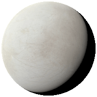

Decades ago, science fiction offered a hypothetical scenario: What if alien life were thriving in an ocean beneath the icy surface of Jupiter's moon Europa? The notion pulled Europa out of obscurity and into the limelight where it has remained, stoking the imaginations of people both within and outside the science community who fantasize about humans discovering life beyond Earth. That fantasy, however, may be grounded in reality.
In 1972, scientists using a telescope at Kitt Peak National Observatory in Tucson, Arizona, made spectroscopic observations that showed that Europa's surface composition is mostly water ice. Thermal models dating back to 1971 also suggested that the interior of Europa could contain a layer of liquid water.
NASA's Pioneer 10 and 11 spacecraft flew by Jupiter in the early 1970s, but the first spacecraft to image the surfaces of Jupiter's moons in significant detail were the Voyager 1 and 2 spacecraft.
Voyager 1's closest approach to Jupiter occurred on March 4, 1979. The spacecraft snapped a full global image of Europa from a distance of about 1.2 million miles (2 million kilometers).
A yellowish-looking Europa against the blackness of space.
Voyager 1 took this image of Europa from a range of 1.6 million miles (2,869,252 kilometers).
NASA/JPL-Caltech
A few months later, Voyager 2 had its closest encounter with Europa on July 9, 1979. Images from the two Voyagers revealed a surface brighter than that of Earth's moon, crisscrossed with numerous bands and ridges, and with a surprising lack of large impact craters, tall cliffs, or mountains. In other words, Europa has a very smooth surface, relative to the other icy moons.
Europa_close_up_from_Voyager_2
This color image of Europa was taken by Voyager 2 during its close encounter on July 9, 1979.
NASA/JPL-Caltech
Even though the Voyagers did not pass extremely close to Europa, their images were of high enough quality that researchers noted some of the dark bands had opposite sides that matched each other extremely well, like pieces of a jigsaw puzzle. These cracks had separated, and dark, icy material appeared to have flowed into the opened gaps, suggesting that the surface had been active at some time in the past.
Voyager images showed only a handful of impact craters, which are expected to build up over time as a planetary surface is constantly bombarded by meteorites over billions of years until the surface is covered in craters. Thus, a lack of large impact craters suggested that the moon's surface was relatively young and implied that something had erased them - such as icy, volcanic flows, or settling of the icy crust under its own weight.
These intriguing findings led to a strong sense of anticipation for NASA's Galileo mission, which launched in 1989 and entered orbit around Jupiter in 1995.
Galileo's primary mission included observations of each of the four Galilean moons during repeated flybys. The information about Europa that Galileo sent was so intriguing that the mission was extended for a two-year follow-on journey, known as the Galileo Europa mission. In all, the spacecraft made a total of 12 close flybys of the icy moon.
Europa_from_Galileo
The puzzling, fascinating surface of Jupiter's icy moon Europa looms large in this view made from images taken by NASA's Galileo spacecraft in the late 1990s.
NASA/JPL-Caltech
One of the most important discoveries made by Galileo showed how Jupiter's magnetic field was disrupted in the space around Europa. This measurement strongly implied that a special type of magnetic field is being created (induced) within Europa by a deep layer of some electrically conductive fluid beneath the surface. Based on Europa's icy composition, scientists think the most likely material to create this magnetic signature is a global ocean of salty water.
Scientists think Europa's ice shell is 10 to 15 miles (15 to 25 kilometers) thick, floating on an ocean 40 to 100 miles (60 to 150 kilometers) deep. So while Europa is only one-fourth the diameter of Earth, its ocean may contain twice as much water as Earth's global ocean. Europa's ocean is considered one of the most promising places in the solar system to look for life beyond Earth.
While no plumes were observed while the Galileo spacecraft was in the Jupiter system in the 1990s, more recent observations from telescopes such as the Hubble Space Telescope, as well as a reanalysis of some data from the Galileo spacecraft, have suggested that it is possible that thin plumes of water are being ejected 100 miles (160 kilometers) above Europa's surface. In November 2019, an international research team led by NASA announced it had directly detected water vapor for the first time above Europa's surface. The team measured the vapor using a spectrograph at the Keck Observatory in Hawaii that measures the chemical composition of planetary atmospheres through the infrared light they emit or absorb.
If the plumes do exist, and if their source is linked to Europa's ocean, then a spacecraft could travel through the plume to sample and analyze it from orbit, and it would essentially be analyzing the moon's ocean. NASA's Cassini spacecraft performed this feat at Saturn's moon Enceladus, which is known to have an ocean spraying into space.
Even if Europa isn't ejecting samples into space, a 2018 study concluded that samples of Europa's ocean could get frozen into the base of the moon's ice shell, where the ice makes contact with the ocean. As the ice shell distorts and flexes from tidal forces, warmer and less-dense ice would rise, carrying the ocean samples to the surface where a spacecraft could analyze it remotely, using infrared and ultraviolet instruments, among others. Scientists could then study the material's composition to determine whether Europa's ocean might be hospitable for some form of life.
Namesake
Europa is named for a woman who, in Greek mythology, was abducted by the god Zeus – Jupiter in Roman mythology.
Potential for Life
Life as we know it seems to have three main requirements: liquid water, certain chemical elements, and an energy source. Also, life takes time to develop. Europa's ocean may have existed for the entirety of our solar system's history, approximately 4 billion years so sufficient time has passed for life to develop.
Astrobiologists – scientists who study the origin, evolution, and future of life in the universe – believe Europa has abundant water and the right chemical elements – the building blocks of life – including carbon, hydrogen, nitrogen, oxygen, phosphorus, and sulfur.
The third ingredient for life is energy. All lifeforms need energy to survive. On Earth, most of that energy comes from the Sun. For example, plants grow and thrive through photosynthesis, a process that converts sunlight into energy. The energy is transferred to humans, animals, and other organisms when the plants are eaten.
But the type of life that might inhabit Europa likely would be powered purely by chemical reactions instead of by photosynthesis, because any life at Europa would exist beneath the ice, where there is no sunlight.
Europa's surface is blasted by radiation from Jupiter. That's a bad thing for life on the surface – it couldn't survive. But the radiation may create fuel for life in an ocean below the surface.
If we eventually find some form of life at Europa it may look like microbes, or maybe something more complex. If it can be demonstrated that life formed independently in two places around the same star, it would then be reasonable to suggest that life springs up in the universe fairly easily once the necessary ingredients are present, and that life might be found throughout our galaxy and the universe.
Size and Distance
With an equatorial diameter of 1,940 miles (3,100 kilometers), Europa is about 90% the size of Earth's Moon. So if we replaced our Moon with Europa, it would appear roughly the same size in the sky as our Moon does, but brighter – much, much brighter. Europa's surface is made of water ice and so it reflects 5.5 times the sunlight than our Moon does.
Europa orbits Jupiter at about 417,000 miles (671,000 kilometers) from the planet, which itself orbits the Sun at a distance of roughly 500 million miles (780 million kilometers), or 5.2 astronomical units (AU). One AU is the distance from Earth to the Sun. Light from the Sun takes about 45 minutes to reach Europa. Because of the distance, sunlight is about 25 times fainter at Jupiter and Europa than at Earth.
Orbit and Rotation
Europa orbits Jupiter every 3.5 days and is locked by gravity to Jupiter, so the same hemisphere of the moon always faces the planet. Jupiter takes about 4,333 Earth days (or about 12 Earth years) to orbit the Sun (a Jovian year). Jupiter's equator (and the orbital plane of its moons) is tilted with respect to Jupiter's orbital path around the Sun by only 3 degrees (Earth is tilted 23.5 degrees). This means Jupiter spins nearly upright so that the planet, as well as Europa and Jupiter's other moons, do not have seasons like Earth.
Jupiter's moons Io, Europa, and Ganymede are in what is called a resonance – every time Ganymede orbits Jupiter once, Europa orbits twice, and Io orbits four times. Over time, the orbits of most large satellites or planets tend to become circular, but in the case of these three satellites, the resonance produces a forced eccentricity since the satellites line up with each other at the same points in their orbits over and over, giving each other a small gravitational tug that keeps their orbits from becoming circular.
Because Europa's orbit is elliptical (slightly stretched out from circular), its distance from Jupiter varies, and the moon's near side feels Jupiter's gravity more strongly than its far side. The magnitude of this difference changes as Europa orbits, creating tides that stretch and relax the moon's surface.
Flexing from the tides likely creates the moon's surface fractures. If Europa's ocean exists, the tidal heating could also lead to volcanic or hydrothermal activity on the seafloor, supplying nutrients that could make the ocean suitable for living things.
Formation
Jupiter's large Galilean moons – Io, Europa, Ganymede, and Callisto – likely formed out of leftover material after Jupiter condensed from the initial cloud of gas and dust surrounding the sun, early in the history of the solar system. Those four moons are likely about the same age as the rest of the solar system – about 4.5 billion years old.
In fact, the Galilean moons are sometimes called a "mini solar system" since they formed from the leftovers of Jupiter similar to how Earth and other planets formed from gas and dust left over from the formation of the Sun. The similarities don't end there. Each planet in the inner solar system is less dense than its inner neighbor – Mars is less dense than Earth, which is less dense than Venus, which is less dense than Mercury. The Galilean moons follow the same principle, being less dense the farther they are from Jupiter. The reduced density at greater distances is likely due to temperature: denser, rocky, and metal material condenses out first, close to Jupiter or the Sun, while lighter-weight icy material only condenses out at larger distances where it is colder.
Distance from Jupiter also determines how much tidal heating the Galilean satellites experience – Io, closest to Jupiter, is heated so much that it is the most volcanically-active body in the solar system. Ancient volcanic activity likely long ago evaporated any water it had when it formed. Europa has a layer of ice and water on top of a rocky and metal interior, while Ganymede and Callisto actually have higher proportions of water ice and lower densities.
Structure
Like our planet, Europa is thought to have an iron core, a rocky mantle, and an ocean of salty water. Unlike Earth, however, Europa's ocean lies below a shell of ice probably 10 to 15 miles (15 to 25 kilometers) thick, and has an estimated depth of 40 to 100 miles (60 to 150 kilometers). While evidence for an internal ocean is strong, its presence awaits confirmation by a future mission.
Surface
Europa's water-ice surface is crisscrossed by dark, reddish-brown cracks. Based on the small number of observable craters, the surface of this moon appears to be no more than 40 to 90 million years old, which is youthful in geologic terms (the surface of Callisto, another of Jupiter's moons, is estimated to be a few billion years old). All along Europa's many fractures, and in splotchy patterns across its surface, is a reddish-brown material whose composition is not known for certain, but likely contains salts and sulfur compounds that have been mixed with the water ice and modified by radiation. This surface composition may hold clues to the moon's potential as a habitable world.
Close up image of Europa's surface
The image on the left shows a region of Europa's crust made up of blocks which are thought to have broken apart and "rafted" into new positions. These images were obtained by NASA's Galileo spacecraft in 1996 and 1997 at a distance of 417,489 miles (677,000 kilometers).
NASA/JPL/University of Arizona
NASA's Galileo spacecraft explored the Jupiter system from 1995 to 2003 and made numerous flybys of Europa. Galileo revealed strange pits and domes that suggest Europa's ice layer could be slowly churning, or convecting (cooler, denser ice sinks, while warmer less-dense ice rises) due to heat from below. Long, linear fractures are often only about a half mile to a mile wide (1-2 kilometers wide) but can extend for thousands of kilometers across Europa's surface. Some of these fractures have built up into ridges hundreds of meters tall, while others appear to have pulled apart into wide bands of multiple parallel fractures.
Galileo also found regions called "chaos terrain," where broken, blocky landscapes were covered in mysterious reddish material. In 2011, scientists studying Galileo data proposed that chaos terrains could be places where the surface collapsed above lens-shaped lakes embedded within the ice.
Atmosphere
Europa has only a tenuous atmosphere of oxygen, but in 2013, NASA announced that researchers using the Hubble Space Telescope found evidence that Europa might be actively venting water into space. This would mean the moon is geologically active in the present day.
In November 2019, an international research team led by NASA announced it had directly detected water vapor for the first time above Europa's surface. If the plumes do exist, and if their source is linked to Europa's ocean, then a spacecraft could travel through the plume to sample and analyze it from orbit, and it would essentially be analyzing the moon's ocean. NASA's Cassini spacecraft performed this feat at Saturn's moon Enceladus, which is known to have an ocean spraying into space.
Magnetosphere
One of the most important measurements made by the Galileo mission showed how Jupiter's magnetic field was disrupted in the space around Europa. The measurement strongly implied that a special type of magnetic field is being created (induced) within Europa by a deep layer of some electrically conductive fluid beneath the surface. Based on Europa's icy composition, scientists think the most likely material to create this magnetic signature is a global ocean of salty water, and this magnetic field result is still the best evidence we have for the existence of an ocean on Europa.